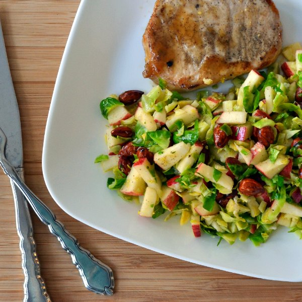

Pork Chops with Brussels Sprouts, Apple & Almond Salad

Total Time
40 min
Nutrition (Per Serving)
658.5 kcalCalories
37 gProtein
33.5 gCarbs
44.6 gFat
Full nutrition table
| Calories | 658.5 kcal |
| Total fat | 44.6 g |
| Saturated fat | 9.7 g |
| Trans fat | 0.2 g |
| Cholesterol | 85.6 mg |
| Sodium | 151.1 mg |
| Carbohydrates | 33.5 g |
| Fiber | 7.8 g |
| Sugars | 19.1 g |
| Protein | 37 g |
| Potassium | 1155.2 mg |
| Calcium | 107.9 mg |
| Iron | 3 mg |
| Vitamin A | 964.4 IU |
| Vitamin C | 105.9 mg |
| Vitamin D | 16 IU |
Cookware
Ingredients
- ¼ cupalmonds
- 1 lbBrussels sprouts
- 2 clovesgarlic
- 2Granny Smith apples
- 1lemon
- 4pork chops, boneless
- balsamic vinegar
- black pepper
- Dijon mustard
- extra virgin olive oil
- pure maple syrup
- salt
Steps
- Preheat oven to 400°F.
- Place pork chops in a baking dish. Season with salt and pepper.4 pork chops, boneless
⅛ tsp salt
⅛ tsp black pepper - In a small bowl, whisk together maple syrup, Dijon, and vinegar.2 tbsp pure maple syrup
1 tbsp Dijon mustard
2 tsp balsamic vinegar - Spoon about ½ of the sauce over the pork chops. Place in the oven and bake for 10 minutes. Then flip pork, spoon remaining sauce over top, and continue to bake until pork is cooked through, another 10-15 minutes.
- Peel and mince garlic. Wash brussels sprouts, trim root ends, and chop into shred-like pieces.2 cloves garlic
1 lb brussels sprouts - Heat a skillet over medium heat.
- Coat bottom of skillet with oil. Add garlic and cook until fragrant, 15-30 seconds. Add brussels sprouts and, stirring occasionally, cook until softened, 2-3 minutes. Remove from heat and set aside to cool.2 tbsp extra virgin olive oil
- In a medium bowl, prepare dressing by whisking together lemon juice, olive oil, salt, and pepper.1 lemon
4 tbsp extra virgin olive oil
⅛ tsp salt
⅛ tsp black pepper - Wash, core, and cut apple into thin medium pieces. Add to bowl with dressing.2 Granny Smith apples
- Roughly chop almonds and add to bowl.¼ cup almonds
- Add brussels sprouts to bowl and toss salad.
- To serve, place pork chops and salad on a plate. Enjoy!